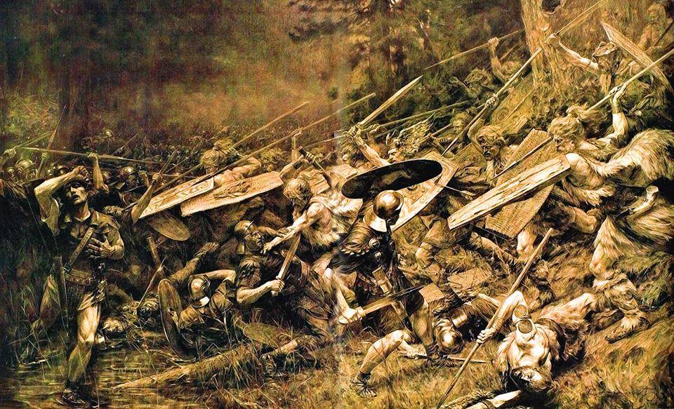

Уроки истории
от Клима Жукова
youtube
vkontakte
telegram
instagram
уроки истории от Клима Жукова
главная
войны и сражения
Войны и отдельные сражения
Причины
Власть
Земли
Влияние
Ресурсы
Рынки сбыта
Война
Мировая
Локальная
Гражданская
Религиозная
Классовая
Сражение
Внутреннее
Международнее
Часть войны
Одиночное
Итог
Заключение мирного договора
Захват и подчинение
Захват и уничтожение
Захват и ассимиляция
Отделение
Битва в Тевтобургском лесу
9 г. н. э.
СССР
Битва между легионами Рима и германскими племенами
Битва между легионами Рима и германскими племенами
